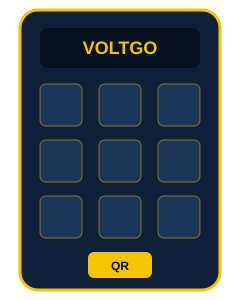

Заряд поруч.
Павербанк напрокат у ТЦ «КУБ»: скануй QR, бери заряд і повертай на станції. Перша така станція в Калуші.
Як це працюєПідтримати ідею
Телефон розряджається. Життя не зупиняється.
Заряд закінчується тоді, коли поруч немає розетки, а власний павербанк не завжди із собою. За нашим опитуванням у Калуші (68 осіб):
розряджається телефон поза домом щонайменше раз на тиждень (51 із 68)
відповіли «так» чи «скоріше так» (48 осіб; 22 — «обов’язково»)
готові скористатися, якщо павербанк бувають із собою лише іноді або ніколи
Чесно: майже половина опитаних носить власний павербанк, тож інтерес — ще не гарантовані покупки. Саме тому спершу пілот.
Чотири кроки — і ви знову на зв’язку
Скануй QR
Наведіть камеру на код станції.
Обери та оплати
Перегляньте умови оренди й оплатіть.
Забери заряд
Станція видасть заряджений павербанк.
Поверни
Поверніть його до сумісної станції.
| Станція | Cheyoll, 12 слотів |
| Перша локація | ТЦ «КУБ», Калуш |
| Кабелі | iPhone, Android, USB-C |
Чому VOLTGO
Перша станція в Калуші
Прямих конкурентів у місті наразі немає.
Корисно під час відключень світла
Немає електрики вдома — телефон можна зарядити на станції.
Без покупки павербанка
Платите лише за час користування.
Там, де люди проводять час
Торгові центри обрали 88% опитаних.
Нехай цифри самі скажуть за себе
перша година, далі 10 ₴ за годину (5 ₴ за кожні 30 хв). Півтори години ≈ 25 ₴.
станція, павербанки, монтаж, юридичні документи, реклама, захист від перепадів напруги, резерв
постійних витрат на місяць
оренд на день (з урахуванням зношення обладнання)
Де хочуть бачити станцію
| Торгові центри | 88% (60 із 68) |
| Автостанції та вокзали | 69% |
| Кафе й ресторани | 56% |
| Навчальні заклади | 50% |
Калькулятор сценаріїв
Оренд на день:
Розрахунковий сценарій за тарифу 25 ₴ з урахуванням податків, еквайрингу й комісії платформи — не гарантований результат. Припущення про 800 відвідувачів ТЦ на день ще потрібно підтвердити.Спочатку довести модель, потім масштабувати
Домовленості
Умови з ТЦ «КУБ» і постачальником, резерв коштів, правила повернення обладнання.
Одна станція
Ціль — щонайменше 8 оренд на день, за три місяці — 12. Рахуємо скани QR, оплачені оренди, повторних клієнтів, втрати павербанків.
Починаємо самі
Основну роботу спершу робимо самостійно; працівники знадобляться пізніше.
Друга станція
Якщо все ок — біля автостанції.
Ризики: замало оренд, втрата чи пошкодження павербанків, зростання орендної плати, перебої з електроенергією, комісія платформи.
Що варто знати
Чи точно проєкт окупиться?
Ні, гарантувати це до пілоту не можна. Тому спершу тестуємо одну станцію й збираємо реальні показники.
Чому тариф може бути завеликим?
51% опитаних вважають прийнятною ціну до 20 ₴, тому обрано ступінчастий тариф: 20 ₴ за першу годину, далі 10 ₴.
Чим відрізняється від власного павербанка?
Його не треба купувати, заряджати й носити з собою — достатньо знайти станцію.